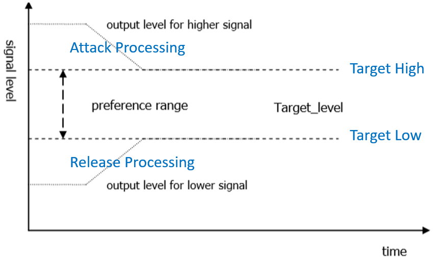

5. VQE Algorithm Function Introduction¶
5.1. Voice Quality Enhancement (VQE)¶
For speechsignalprocessing (SSP) algorithm, When near-endspeechsignalsuffertofromfar-endechointerferenceorisnear-endstationary noiseinterferencewhen, can usingSSPinalgorithmfunctiontosuppressiontheseinterference, therebyimprovespeechsignalquality. SSPinprovide a solutionsolution, includinglinenessechocancellation (AEC) , non-linenessechosuppression (AES) , speechnoise reduction (NR) , Automatic Gain Control (AGC ) , ...etc.function. SSPalgorithmsupport8kHzand16kHzsampling rate, mono, 16bitssamplinglengthspeechsignal. inconnectundertopagewillIntroductioneachalgorithmfunctionandtheuseparameter.
Parameterspara_fun_configcorrespondingtofile cvi_comm_aio.h inu32OpenMask, can controlmicrophonepathSSPalgorithmfunction, Parameterspara_spk_fun_configcan controlspeakerpathSSPalgorithmfunction, eachbitscorrespondingalgorithmfunctionas followsTable described.
para_fun_config |
Description(microphone path) |
|---|---|
Bit 0 |
0:Disable AEC
1:Enable AEC
|
Bit 1 |
0:Disable AES
1:Enable AES
|
Bit 2 |
0:Disable NR
1:Enable NR
|
Bit 3 |
0:Disable AGC
1:Enable AGC
|
Bit 4 |
0:Disable Notch Filter
1:Enable Notch Filter
|
Bit 5 |
0:Disable DC Filter
1:Enable DC Filter
|
Bit 6 |
0:Disable DG
1:Enable DG
|
Bit 7 |
0:Disable Delay
1:Enable Delay
|
para_spk_fun_config |
Description (speaker path) |
|---|---|
Bit 0 |
0:Disable AGC
1:Enable AGC
|
Bit 1 |
0:Disable EQ
1:Enable EQ
|
Table: para_fun_config/para_spk_fun_config Parameter Description
5.2. AEC/AES (Acoustic Echo Cancellation/Acoustic Echo Suppression)¶
anyfull-duplextalksystemarchitectureallstoreinwithechointerference. echocancellationdevicecancancellationthroughnear-endacousticpath couplingbackmicrophonespeakeroutputecho. usingtheprovide a solutionsolution, linenessselfsuitableshouldfiltermodule (AEC) combine withnon-linenessechosuppressionmodule (AES) canvalidlysuppressionecho, fromandimprovespeechtalkquality.

Figure: AEC+AESperformance before and after processing
Four adjustable parameters are provided for tuning AEC/AES performance:
para_aec_init_filter_len/para_aec_filter_len: selfsuitableshouldfilterlength. according tonotsameprototypeechotailtimeadjustappropriatefilterlength. If selectlongerlength, willcauserelativelyhighMIPSandpower consumption.
para_aec_init_filter_len: onlyused to onestartappearechowhentuning.
para_aes_std_thrd: residual echo detection threshold. valuesetlargerwhen, near-endspeechqualitybetterbutresidual echorelativelymultiple. conversely, valuesetsmallerwhen, near-endspeechqualityworsebutresidual echoless.
para_aes_supp_coeff: residual echo suppression strength. valuesetlarger, forresidual echosuppressionstrengthlarger, butat the same timealsowill affectnear-endspeechwithtoexceedmultipleaudio detailsloss/damage.
AEC/AESParameters |
Adjustable Range |
Description |
para_aec_init_filter_len/para_aec_filter_len |
1 - 13 |
8kHzsampling rate: [1,13]corresponding[20ms,260ms]
16kHzsampling rate: [1,13]corresponding[10ms,130ms]
|
para_aes_std_thrd |
0 - 39 |
0: residual echodeterminethresholdminimum
39: residual echodeterminethresholdmaximum
|
para_aes_supp_coeff |
0 - 100 |
0: residual echosuppressionstrengthminimum
100: residual echosuppressionstrengthmaximum
|
Table: AEC/AES Parameter Description
5.3. NR (Noise Reduction)¶
NRmodulecansuppressionsurroundingenvironmentstationary noise, for examplefannoise, air conditionernoise, enginenoise, white/pinknoise, ...etc.etc.. relying onproprietaryspeechintelligentSpeech VADalgorithm, NRcanretainspeechsignal, at the same timealsocanvalidlysuppressionstationary noise, fromandimprovespeechtalkquality.

Figure: NRperformance before and after processing
Three adjustable parameters are provided for tuning NR performance:
para_nr_init_sile_time:**initial silence duration. CODEC may produce meaningless random noise when powered on, **para_nr_init_sile_time can willthissegmentsignalsetbecomesilence.
para_nr_snr_coeff: signal-to-Noise Ratio (SNR) withtracking coefficientnumber. If parametervaluelarger, thenNRwillhavehasrelativelyhighnoise reductioncapability, butspeechsignalmaywillmore likelydistortion. mutualreversely, parametervaluesmaller, thenNRwillsuppressionlessnoisesignal, butwillhavehasbetterspeechqualityperformance. underTable isbased onnotsameSNRenvironmentunder, thisparameterappropriateadjustrange, ineachtypeSNRcaseunder, parametervaluelarger, forstationary noisesuppressionstrengththenlarger.
NRParameters |
Adjustable Range |
Description |
para_nr_init_sile_time |
0 - 250 |
corresponding0sto5s,
eachstep20ms
|
Table: NR Parameter Description
Surrounding SNR Environment |
Adjustment Range |
Description |
Low |
0 - 3 |
0: innoise reductionin noise reductionnotaggressive
3: innoise reductionmost aggressive in noise reduction
|
Medium |
4 - 10 |
4: innoise reductionin noise reductionnotaggressive
10: innoise reductionmost aggressive in noise reduction
|
High |
11 - 25 |
11: innoise reductionin noise reductionnotaggressive
25: innoise reductionmost aggressive in noise reduction
|
Table: para_nr_snr_coeffParameter Description
5.4. AGC (Automatic Gain Control)¶
AGCmodulecanautomaticwilloutput leveladjusttopresetrange, withprovidemorecomfortable listening experience. If input signallower than"Target Low", thenAGCwillwilloutput leveltoward"Target Low"adjust. anotheroneaspect, If input signalhigher than"Target High", thenAGCwillwilloutput leveltoward"Target High"adjust.

Figure: AGCadjustsignallevel

Figure: AGCperformance before and after processing
providefouritemadjustableparameter, used to tuningmicrophonepathAGCperformance, ittheyrespectivelyis:
para_agc_max_gain: thisparameterissignalcanbeplacelargemaximumgain.
para_agc_target_high: thisparameterisAGCwillwillreach"Target High"horizontal. For higher than para_agc_target_high**input signal, AGCwillwillitsconvergenceto **para_agc_target_high.
para_agc_target_low: thisparameterisAGCwillwillreach"Target Low"horizontal. For lower than para_agc_target_low**input signal, AGCwillwillitsconvergenceto **para_agc_target_low. If inreach para_agc_target_low**beforethenalreadyreach **para_agc_max_gain , thenAGConlywillconvergenceto para_agc_max_gain .
para_agc_vad_ena: Speech-activated AGC function. enablethisfunctionandat the same timeopen enableNRandAEC/AESfunctionwhen, canmakeAGCavoidplacelargeresidual backgroundstationary noiseandresidualback sound, withobtainobtainbettereffect.
AGCParameters |
Adjustable Range |
Description |
para_agc_max_gain |
0 - 6 |
[0,6]corresponding
maximumraiserisegainis[6dB,42dB], eachstep6dB
|
para_agc_target_high |
0 - 36 |
0to36corresponding0dBto-36dB |
para_agc_target_low |
0 - 72 |
0to72corresponding0dBto-72dB |
para_agc_vad_ena |
0 - 1 |
0: Disable Speech-activated AGC function
1: Enable Speech-activated AGC function
|
Table: microphonepathAGC Parameter Description
para_spk_agc_max_gain, para_spk_agc_target_high, para_spk_agc_target_low these threeparameterused to tuningspeakerpathAGCperformance, itsparameterdefinitionandtuningrangewithmicrophonepathAGCsame.
5.5. Notch Filter¶
Notch FilterParameters |
Adjustable Range |
Description |
para_notch_freq |
0 - 1 |
0: notch frequency is 1kHz
1: notch frequency is 4kHz
|
5.6. DG (Digital Gain)¶
thisfunctionhashelpreduceresidual echo and residual stationary noise. If if the signal gain level in the microphone channel is low, enabling this function is not recommended.
DGParameters |
Adjustable Range |
Description |
para_dg_target |
1 - 12 |
1: least aggressive residual echo/noise suppression, but best speech quality
12: most aggressive residual echo/noise suppression, but poorest speech quality
|
5.7. Delay¶
thisfunctionused to delayreferencesignal, can makeAEC/AESaccelerateconvergenceonestartappearecho. If alreadythroughadjustparameterpara_aec_init_filter_lenaccelerateconvergenceinitialecho, thennotrecommendenablethisfunction.
DelayParameters |
Adjustable Range |
Description |
para_delay_sample |
1 - 3000 |
1 to 3000 corresponding to 1 to 3000 samples |
5.8. Equalizer¶
thisfunctionisFor speechsignalperform equalizationprocessing, can alreadybytuningbandcenter frequency,
gainandquality factor, adjustoutthewantneed tospeechsignalpresentfrequency response, alsocancompensate
hardwareorspeakerunitthecausenotperfectfrequency response.
EqualizerParameters |
Adjustable Range |
Description |
para_spk_eq_nband |
1 - 5 |
1to5corresponding1to5 bands |
para_spk_eq_freq[] |
8kHz Fs: 0 - 9
16kHz Fs: 0 - 10
|
Band center frequency; see the para_spk_eq_freq table |
para_spk_eq_gain[] |
0 - 60 |
Band gain; see the para_spk_eq_gain table |
para_spk_eq_qfactor[] |
0 - 17 |
Band quality factor.
0: withpara_spk_eq_freqisincenterfrequency responsecurvelinemostsmooth, but foritsnearbyfrequencyeffect
widest range
17: withpara_spk_eq_freqisincenterfrequency responsecurvelinemostsharp, but
foritsnearbyfrequencyeffectnarrowest range
|
[Note]:
When para_spk_eq_nbandconfigureis1when, need toat the same timeconfigurethecorrespondingpara_spk_eq_freq[0], para_spk_eq_gain[0], para_spk_eq_qfactor[0].
When para_spk_eq_nbandconfigureis2when, need toat the same timeconfigurethecorrespondingpara_spk_eq_freq[0], para_spk_eq_gain[0], para_spk_eq_qfactor[0] and para_spk_eq_freq[1], para_spk_eq_gain[1], para_spk_eq_qfactor[1], wherearrayindex 0parameterwill affect shouldtofirstitemband, arrayindex 1parameterwillcorrespondingtoseconditemband. and so on.
para_spk_eq_freq Parameters |
Corresponding center frequency (Hz) |
|---|---|
0 |
100 |
1 |
200 |
2 |
250 |
3 |
350 |
4 |
500 |
5 |
800 |
6 |
1200 |
7 |
2500 |
8 |
3300 |
9 |
3990 |
10( only applies to a 16 kHz sampling rate ) |
7990 |
para_spk_eq_gain Parameters |
Corresponding gain (dB) |
para_spk_eq_gainParameters |
Corresponding gain (dB) |
|---|---|---|---|
0 |
-40 |
31 |
-9 |
1 |
-39 |
32 |
-8 |
2 |
-38 |
33 |
-7 |
3 |
-37 |
34 |
-6 |
4 |
-36 |
35 |
-5 |
5 |
-35 |
36 |
-4 |
6 |
-34 |
37 |
-3 |
7 |
-33 |
38 |
-2 |
8 |
-32 |
39 |
-1 |
9 |
-31 |
40 |
+0 |
10 |
-30 |
41 |
+1 |
11 |
-29 |
42 |
+2 |
12 |
-28 |
43 |
+3 |
13 |
-27 |
44 |
+4 |
14 |
-26 |
45 |
+5 |
15 |
-25 |
46 |
+6 |
16 |
-24 |
47 |
+7 |
17 |
-23 |
48 |
+8 |
18 |
-22 |
49 |
+9 |
19 |
-21 |
50 |
+10 |
20 |
-20 |
51 |
+11 |
21 |
-19 |
52 |
+12 |
22 |
-18 |
53 |
+13 |
23 |
-17 |
54 |
+14 |
24 |
-16 |
55 |
+15 |
25 |
-15 |
56 |
+16 |
26 |
-14 |
57 |
+17 |
27 |
-13 |
58 |
+18 |
28 |
-12 |
59 |
+19 |
29 |
-11 |
60 |
+20 |
30 |
-10 |
VQE For Audio Input and Audio Output twoitempathdifferencesamepoint, respectivelythrough UpVQE and DnVQE twoitemschedulinglogicto processingtwoitempathdata, UpVQEincludingAEC, AES, NR, AGC. DnVQEcurrentbeforenot supported. correspondingparameter can referenceTable header filecvi_comm_aio.h.